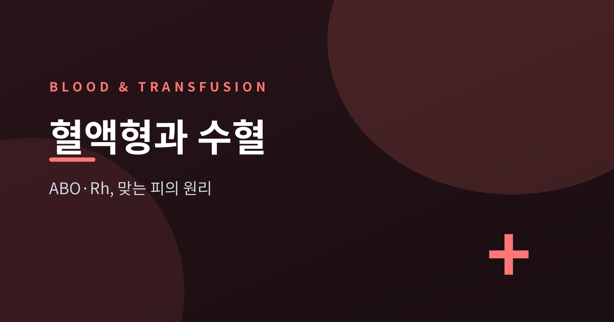
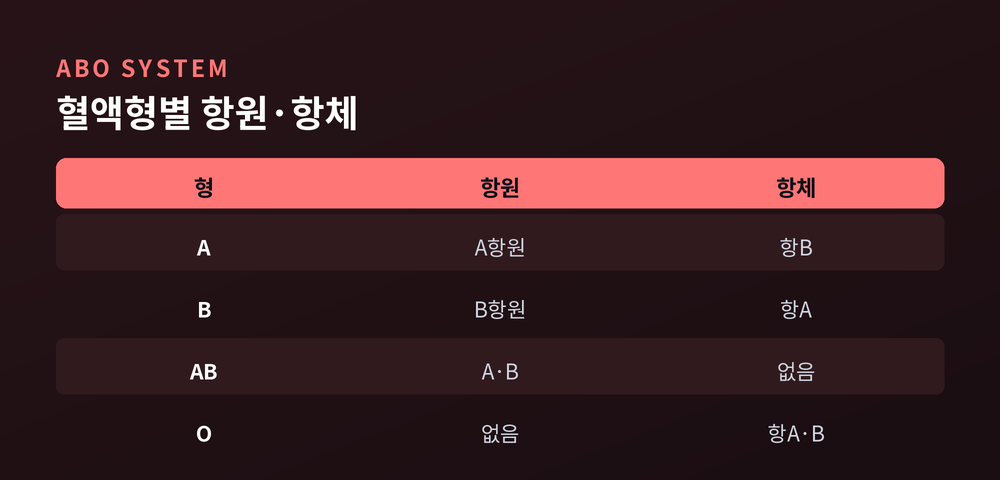
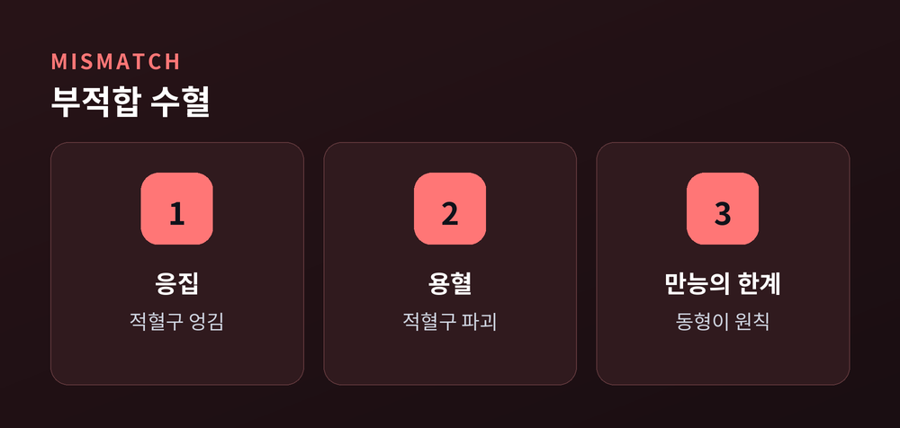
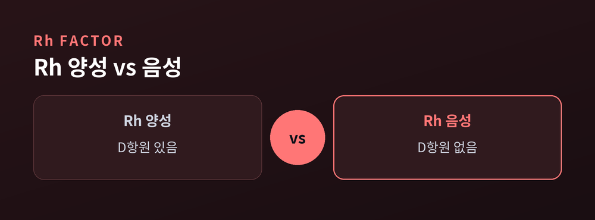
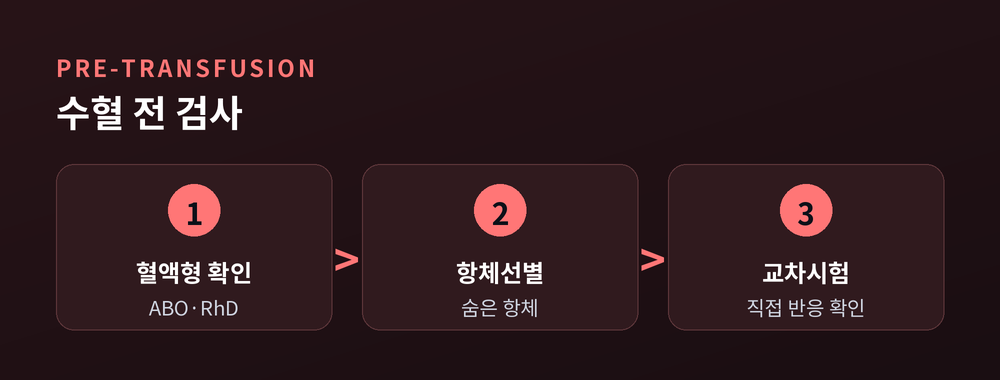

ABO·Rh, 왜 맞는 피여야 할까
수혈은 남의 피를 몸에 들이는 일입니다. 아무 피나 되는 것은 아니고, 맞는 피여야 합니다. 오늘은 그 '맞는다'는 말의 정체를 ABO와 Rh를 중심으로 정리해 보겠습니다.

피를 가르는 기준은 적혈구 표면에 붙은 '항원'입니다. 일종의 이름표라고 보시면 됩니다.
이 항원은 단백질이 아니라 적혈구 표면에 붙은 당(糖) 사슬입니다. 효소가 당을 한 칸씩 이어 붙여 A항원과 B항원을 만듭니다.
혈장 속에는 자기에게 없는 항원을 공격하는 '항체'가 떠다닙니다. 원리는 단순합니다. 자기 항원에 대한 항체는 만들지 않고, 자기에게 없는 항원에 대한 항체만 가집니다.
그래서 A형은 A항원을 지니고 항B 항체를 가집니다. B형은 그 반대입니다. AB형은 두 항원을 모두 가져 항체가 없고, O형은 항원이 없는 대신 항A·항B 항체를 모두 지닙니다.
이 항A·항B 항체는 생후 6개월경부터 저절로 생깁니다. 수혈이나 임신 같은 자극이 없어도 몸에 존재하는 자연항체인 셈입니다.

부적합 혈액이 들어오면, 혈장 속 항체가 낯선 적혈구의 항원에 달라붙습니다. 적혈구는 서로 엉기고(응집), 이어 터집니다(용혈).
가령 A형 환자에게 B형 적혈구가 들어가면, 환자의 항B 항체가 낯선 B항원을 붙들어 그 적혈구를 파괴합니다.
이것이 용혈성 수혈부작용입니다. 발열과 오한에서 시작해 혈색소뇨, 신부전, 쇼크까지 이어질 수 있습니다. 소량이라도 위험할 수 있는 반응입니다.
흔히 O형을 '만능 공혈자', AB형을 '만능 수혈자'라 부릅니다. O형 적혈구에는 A·B 항원이 없어 공격받을 표적이 없고, AB형 혈장에는 항체가 없어 어떤 적혈구도 공격하지 않기 때문입니다.
다만 이 표현은 오해를 부르기 쉽습니다. O형이 만능인 것은 항체가 든 혈장을 빼고 적혈구만 줄 때의 이야기입니다. O형 혈장에는 항A·항B 항체가 그대로 있습니다.
예전엔 이 '만능'을 넓게 여겼습니다. 지금은 극히 위급한 상황의 소량 응급 조치로만 봅니다. 원칙은 언제나 같은 혈액형끼리의 동형 수혈입니다.

Rh는 D항원의 유무로 갈립니다. 있으면 양성, 없으면 음성입니다.
ABO와 다른 점이 하나 있습니다. 항D 항체는 자연항체가 아닙니다. Rh 음성인 사람이 Rh 양성 혈액에 노출된 뒤에야 만들어집니다.
이 성질이 임신에서 문제가 됩니다. Rh 음성 산모가 Rh 양성 태아를 가지면, 분만 과정에서 태아 적혈구에 노출돼 항D 항체가 생깁니다.
첫 임신은 대개 무사합니다. 문제는 다음 임신입니다. 이미 생긴 항체가 태아의 적혈구를 공격해 황달과 빈혈, 심하면 태아수종을 일으킵니다.
예방법은 있습니다. 항D 면역글로불린(로감)을 임신 28주경과 분만 후 72시간 이내에 맞으면, 산모가 항체를 만드는 것을 막아 다음 임신을 지킬 수 있습니다.

그래서 병원은 피 한 봉지를 그냥 내주지 않습니다. 수혈 전 검사를 거칩니다.
먼저 ABO·RhD 혈액형을 확인하고, 항체선별검사로 예상 밖의 항체를 찾습니다. 마지막이 교차시험입니다.
교차시험은 환자의 혈청과 공혈자의 적혈구를 실제로 섞어 봅니다. 공혈자 적혈구와 환자 혈청을 맞춰 보는 주교차시험이 그 핵심입니다. 응집이나 용혈이 보이면, 그 피는 절대 수혈하지 않습니다.
이 관문들을 통과한 뒤에야 수혈이 시작됩니다. 원칙은 처음부터 끝까지 하나입니다. 같은 혈액형끼리, 동형 수혈입니다.

한국인은 A형이 약 34%로 가장 많고, O형 28%, B형 27%, AB형 11% 순입니다. Rh 음성은 0.1% 정도로 드뭅니다. 드문 혈액형일수록 제때 맞는 피를 구하기가 어렵습니다.
정리하면 이렇습니다. 수혈의 안전은 화려한 기술이 아니라, 항원과 항체를 어긋나지 않게 맞추는 꼼꼼함에서 나옵니다.
"맞는 피란, 내 몸이 남으로 오해하지 않는 피입니다."
이 글은 일반 교양을 위한 정리입니다. 실제 수혈이나 임신 중 Rh 관리가 필요하시다면, 반드시 의료진과 상담하시길 권합니다.
참고 소스